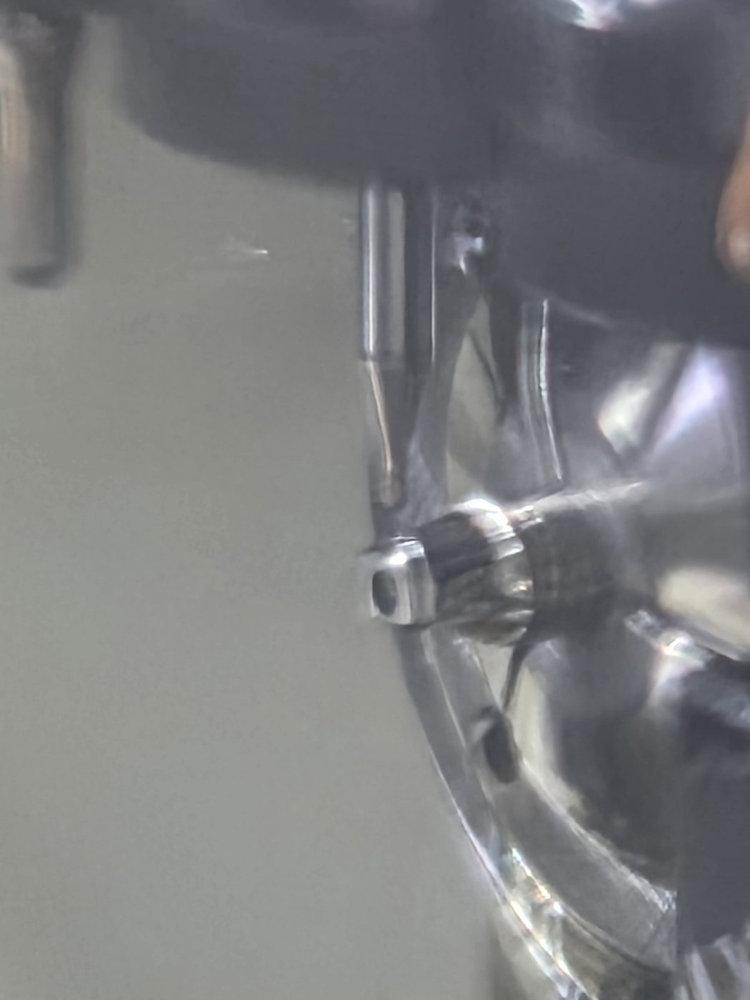

기공소 이야기 · 치과기공소
디자인은 기공소에서,
디자인은 기공소에서,
가공은 어벗츠에서.
장비를 들일까, 외주를 찾을까. 커스텀 어벗먼트 앞에서 고민하는 치과기공소를 위해, 디자인 STL 한 건이 CNC 밀링과 검사를 거쳐 출고되기까지를 따라갑니다.

기공소 대표의 고민장비를 살까,
장비를 살까,
맡길 곳을 찾을까.
커스텀 어벗먼트 의뢰는 꾸준히 들어오는데, 자체 CNC 장비를 들이자니 투자와 관리가 부담입니다. 외부에 맡기자니 파일을 어디로 보내고, 진행은 어떻게 확인하고, 정산은 언제 되는지부터 막막합니다.
어벗츠는 이 질문에 두 개의 길로 답합니다. 치과에서 들어온 의뢰를 관리하는 길, 그리고 디자인만 올리고 생산을 맡기는 길입니다.
기공소의 두 가지 경로받은 의뢰는 보드에서,
받은 의뢰는 보드에서,
생산은 어벗츠로.
디자인 STL 한 건의 여정디자인만 올리면,
디자인만 올리면,
가공은 파트너가.
- 디자인 업로드디자인 STL
- 생산 의뢰의뢰 화면에서 등록
- CNC 밀링환자별 형상 가공
- 치수 검사측정 · 도면 대조
- 출고 · 배송송장 등록

숫자로 보는 생산 의뢰과금도, 정산도
과금도, 정산도
단순하게.
1건 = 1개
생산 의뢰 과금
디자인 STL 1건 = 커스텀 어벗먼트 1개
1일
익월 정산 지급
매월 1일~말일 확정분 · 이용약관 제13조
18건
식약처 품목 신고 · 인증
어벗먼트 · 힐링 · 시술 키트 · 기구
시작 준비시작에 필요한 것,
시작에 필요한 것,
네 가지.
- 가입사업자등록번호 · 기공소 유형 선택
- 생산 의뢰 파일디자인 STL
- 규격연결부 규격은 의뢰 화면에서 확인
- 배송지수령 주소 등록
정산월 단위로 확정하고,
월 단위로 확정하고,
다음 달 1일에.
기공소 정산은 매월 1일부터 말일까지 확정된 금액을 익월 1일에 등록 계좌로 지급합니다. 기공크레딧으로 상계할 수도 있습니다.
생산 의뢰만 이용하는 기공소의 조건은 상담 때 안내해 드립니다. 자세한 내용은 어벗츠 소개에서 확인하세요.

다음 이야기

이어서 읽어 보세요.
제조 이야기 · 기공소 · 제조사
커스텀 어벗먼트 CNC 밀링 제작 과정, 파일 한 건이 치과까지 | 어벗츠
어벗츠(abuts.fit)로 의뢰한 커스텀 어벗먼트가 만들어지는 과정. 디자인 파일 확인, CNC 밀링 가공, 치수 검사, 출고까지 제작 공정과 가공실 사진을 소개합니다.
치과 이야기 · 치과
치과 기공 의뢰, 전화 대신 화면으로 확인하는 법 | 치과·기공소 어벗츠
치과에서 치과기공소로 보내는 기공 의뢰와 커스텀 어벗먼트 제작 의뢰를 abuts.fit 화면으로 등록하고, 준비·가공·출고·완료 단계와 송장까지 확인하는 방법을 이야기로 정리했습니다.
브랜드 스토리 · 치과 · 치과기공소
치과의사가 직접 만든 치과·기공소 의뢰 플랫폼, 어벗츠 이야기
치과의사이자 개발자인 이준호 원장이 진료실의 불편에서 출발해 만든 치과·치과기공소 제작 의뢰 플랫폼 어벗츠(abuts.fit). 제품과 플랫폼이 동료 치과로 이어지기까지의 이야기.